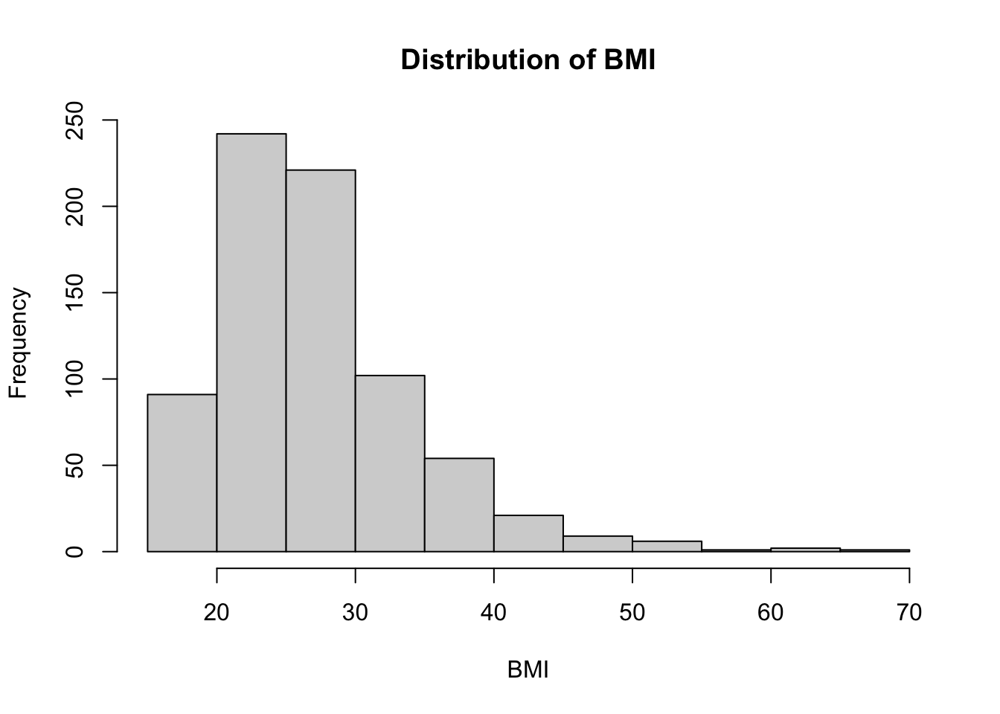

library(tidyverse)
library(gtsummary)
library(here)
opt <- get(load(here::here("data","opt.rda")))
opt$group_cat <- factor(opt$Group, levels = c("C", "T"), labels = c("Control", "Treatment"))Final_Project
EPI 590R Final Project, Sri Harsha
- Loading the data
This dataset contains 823 participants. Of wchich, 410 were in the control group and 413 were in the Treatment group.
- Creating a descriptive statistics table from the data
| Characteristic | Total N = 8231 | Control N = 4101 |
Treatment N = 4131 |
|---|---|---|---|
| Age | 25 (22, 30) | 25 (22, 30) | 25 (22, 30) |
| Body Mass Index | 26 (23, 31) | 26 (23, 31) | 26 (23, 31) |
| Unknown | 73 | 35 | 38 |
| Tobacco Use | |||
| 26 (3.2%) | 13 (3.2%) | 13 (3.1%) | |
| No | 704 (86%) | 353 (86%) | 351 (85%) |
| Yes | 93 (11%) | 44 (11%) | 49 (12%) |
| Alcohol Use | |||
| 27 (3.3%) | 13 (3.2%) | 14 (3.4%) | |
| No | 780 (95%) | 389 (95%) | 391 (95%) |
| Yes | 16 (1.9%) | 8 (2.0%) | 8 (1.9%) |
| Necessary Essential Dental Care | |||
| 22 (2.7%) | 10 (2.4%) | 12 (2.9%) | |
| No | 318 (39%) | 161 (39%) | 157 (38%) |
| Yes | 483 (59%) | 239 (58%) | 244 (59%) |
| Completed Essential Dental Care | |||
| 22 (4.4%) | 10 (4.0%) | 12 (4.7%) | |
| No | 132 (26%) | 66 (27%) | 66 (26%) |
| Yes | 351 (70%) | 173 (69%) | 178 (70%) |
| Unknown | 318 | 161 | 157 |
| 1 Median (Q1, Q3); n (%) | |||
There were 823 participants in the study with a mean age of 25.9781288.
Read Table 1 for the descriptive statistics of the study participants.
- Regression model
| Characteristic | N | OR | 95% CI | p-value |
|---|---|---|---|---|
| Age | 823 | 1.22 | 1.17, 1.27 | <0.001 |
| Education | 823 | |||
| 8-12 yrs | — | — | ||
| LT 8 yrs | 1.73 | 1.11, 2.77 | 0.018 | |
| MT 12 yrs | 1.05 | 0.72, 1.54 | 0.8 | |
| Use.Tob | 823 | |||
| — | — | |||
| No | 1.01 | 0.39, 2.34 | >0.9 | |
| Yes | 1.65 | 0.57, 4.43 | 0.3 | |
| Use.Alc | 823 | |||
| — | — | |||
| No | 1.02 | 0.40, 2.35 | >0.9 | |
| Yes | 0.58 | 0.15, 2.24 | 0.4 | |
| V3.PD.avg | 684 | 1.36 | 0.96, 1.98 | 0.10 |
| Abbreviations: CI = Confidence Interval, OR = Odds Ratio | ||||
- Figure: Histogram of BMI

Figure 1 for the BMI distribution of the study participants.
- Creating a function and using it.
[1] "Yes: 24 of 823"- Inline R code - 1 pulling a statistic from a table and 1 printing something else.
Overall, 351 (70%) completed essential dental care.
In the control group, BMI was 26 (23, 31).
Among treatment participants, alcohol use “Yes” was 8 (1.9%).
Tobacco use was reported by 11.3% of participants.
Mean pocket depth at Visit 3 was 2.68 mm.